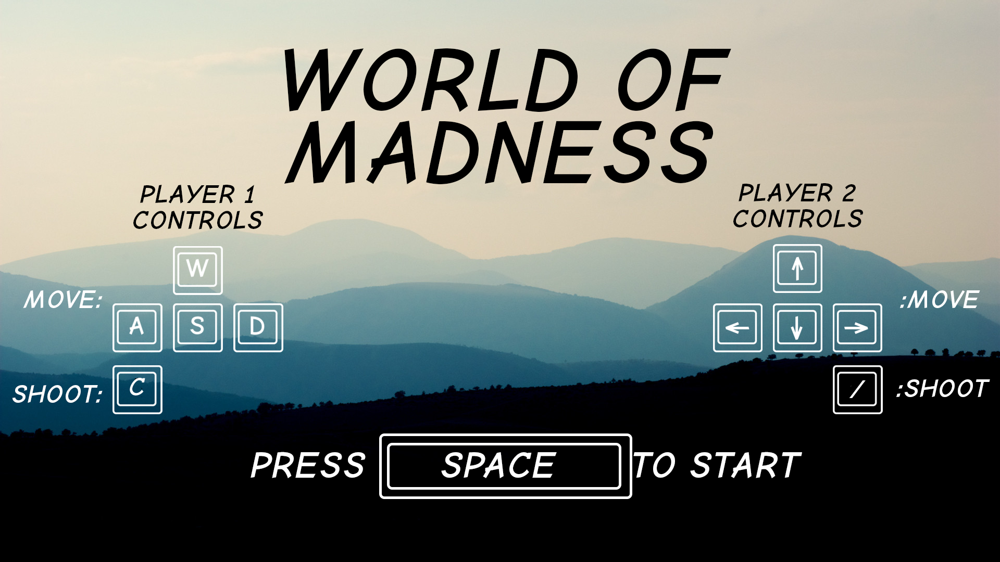
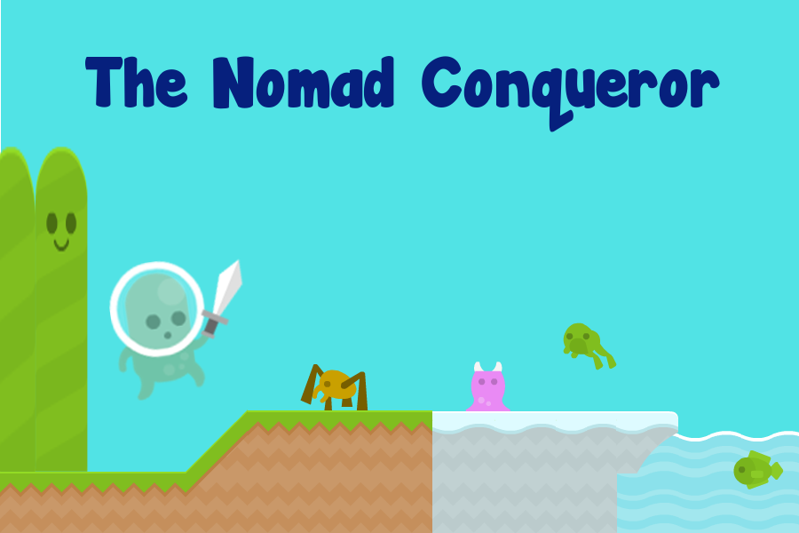

Projects
Shift
2.5D game built on Unity and C where aspect of the game is changed through the rotation of the world. Project creation was through the collaboration of 3 other members where my primary role was software developer lead.
Responsibilities:
- Create all user interaction concerning player actions and collision detection
- Develop AI for different types of monsters in the game
Github: Shift

World of Madness
Bottom-up aerial 3D game where players are ninja bears and attack each other with items picked up from the ground. Built fully on Unity and C.
Responsibilities:
- Generation of maps procedurally
- Develop all aspects of the game including movement, game states and all classes
Github: World of Madness

The Nomad Conqueror
2D platformer game built on Unity and C where player wanders throughout the map to solve puzzles and advance towards the next level.
Responsibilities:
- Generation of maps manually using a map texture editor
- Develop player movement as well as simple enemy AI
- Account for game collisions and rendering maps
Github: The Nomad Conqueror